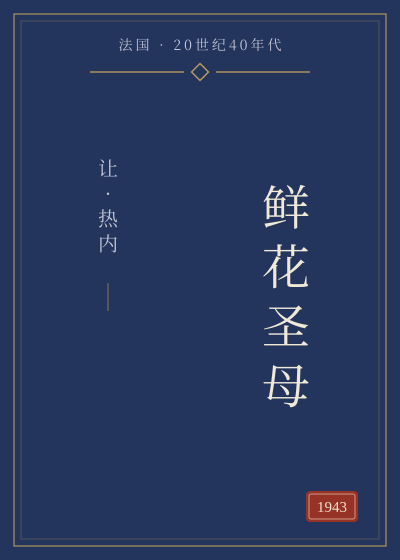
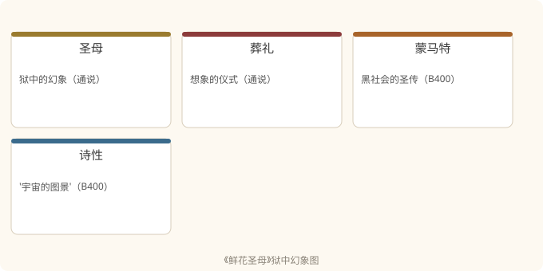

鲜花圣母
一、基本信息
| 作者 | 让·热内 |
|---|---|
| 成书/出版 | 1943年（Britannica B400：Notre-Dame des Fleurs (1943)——1942年Fresnes狱中写） Jean Genet — Encyclopaedia Britannica（百科全书） |
| 国别/地区 | 法国 |
| 时代 | 近代 · 20世纪40年代 |
| 体裁 | 长篇小说 |
| 语言 | 法语 |

《鲜花圣母》狱中幻象图（主题·结构图）
二、创作背景
Britannica（B400）：'vividly portray[s] the prewar Montmartre underworld of thugs, pimps, and perverts'（生动描绘战前蒙马特的黑社会——恶棍、皮条客与'变态者'）。
Britannica（B400）：'transformed erotic and often obscene subject matter into a poetic vision of the universe'（把情色甚至猥亵题材转化为宇宙的诗性图景）。
Britannica（B400）：热内——'a French criminal and social outcast turned writer'；1942年囚于 Fresnes 狱中写。
三、内容脉络
（通说待核——B400未载剧情）圣母神像与死去的'娇美'达令：狱中的想象葬礼。
（通说待核）蒙马特黑社会的'圣徒传'式颠倒。
四、主要人物表
| 人物 | 身份 | 说明 |
|---|---|---|
| '娇美'达令 | 死者/神像 | （通说待核，B400未载） |
| 圣母 | 狱中幻象 | （通说待核） |
五、主题与艺术特点
- '黑社会的圣徒传'（通说待核）。
- '情色题材的诗性宇宙'（B400）。
- 葬礼作为创作（通说待核）。
六、影响与评论
- Britannica：'vividly portray[s] the prewar Montmartre underworld'（B400）。
Jean Genet — Encyclopaedia Britannica（百科全书） - Britannica：'poetic vision of the universe'（B400）。
Jean Genet — Encyclopaedia Britannica（百科全书）
七、阅读建议
难点
- '颠倒'的圣徒传语体。
- 狱中写作的伦理。
- 《鲜花圣母》中译名（《玫瑰奇迹》）待核。
- 法文原版。
热内首选；与《小偷日记》对读。
八、待核实
- '娇美'达令名核对（Divine说——通说）。
- 1943年出版（Morihien私下印说）待核。
- '蒙马特'细节待核。